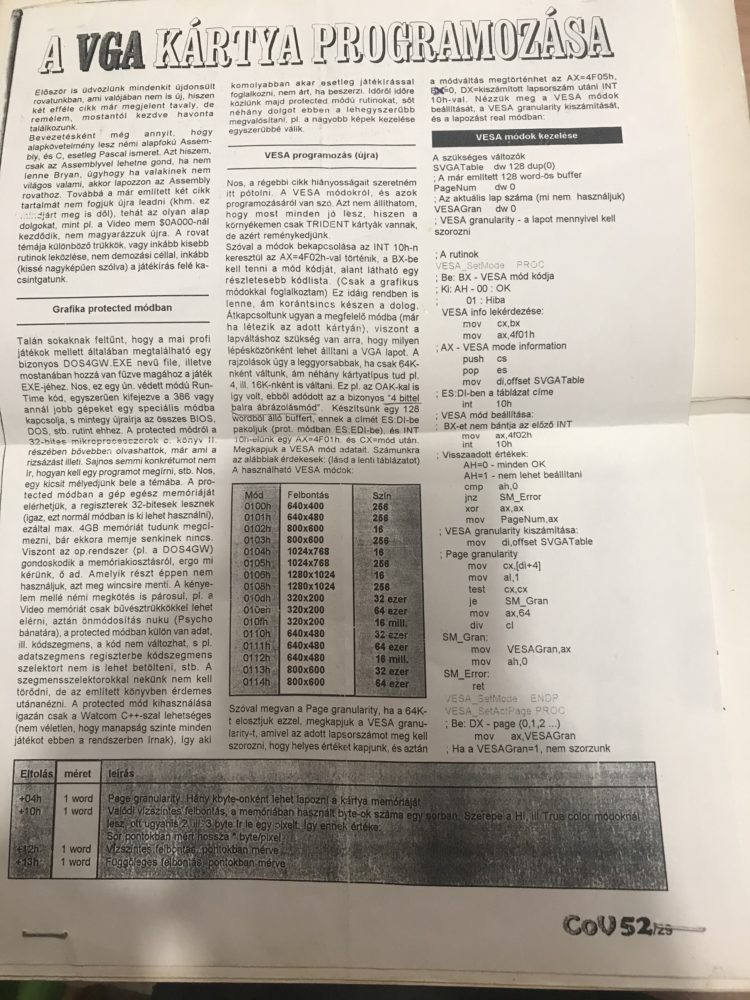

Te jó ég... Ki lehetett az a lány? És Cserháti Zsuzsa? Most komoly?
Ez a kis alkamazás még DOS alatt futott és Borland C-ben íródott. (Lehet, hogy volt már benne egy kis C++ is, de ha igen akkor csak mutatóban.) Még a gimnáziumban kezdtem rajta dolgozni, és az egyetem alatt ahol csak lehetett minden tantárgyból ezt használtam beadandónak.
Hatalmas királyságnak számított, hogy 640x480-as grafikus módot használtam hozzá és minden kis pixel színét kézzel számolgattam ki. DOS alatt nem volt még DirectX, és lemezeken másolgatott text fájlokon, meg magazinokbók kifénymásolt papírfecniken terjedt az információ.

Tudtam én hogy nem szabad kidobni semmit... Meg is találtam a szentírást az első C könyvembe betűzve. Szóval ehhez hasonló, Commodore világból kimásolt dolgokra tessenek gondolni.
Hatalmas poén hogy húsz évvel később még sikerült lefordítani, sőt DosBoxban el is indul, ami alighanem webassemblyben fut a böngészőben... Egy pár réteg rárakódott az évek alatt...
Végül úgy döntöttem, hogy miért ne lehetne itt a borzalmas forrása is az egésznek... Githubon megtalálható, ha valaki erre gerjed. Aki meg még nagyobb ász, fent is megnézheti ha ESC-el kilép a programból...